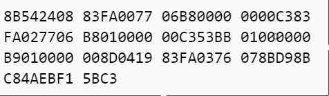
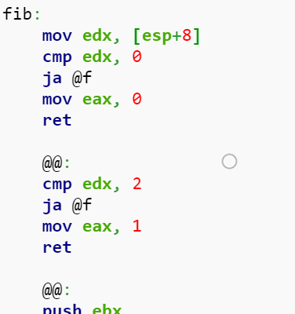
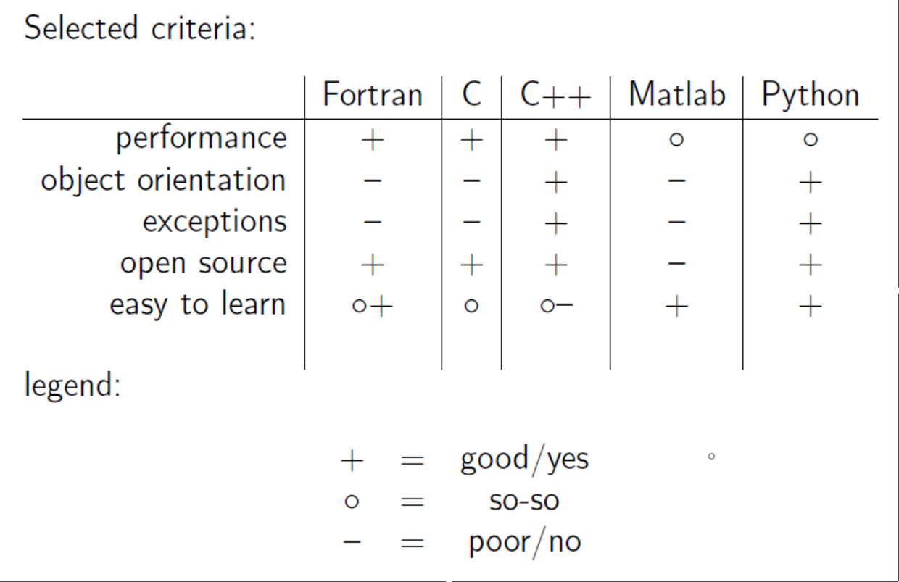
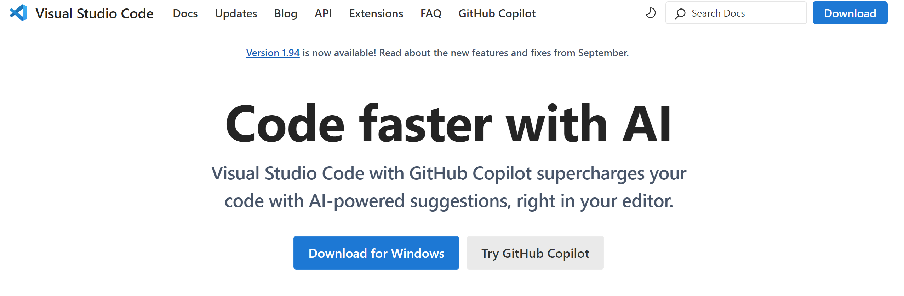
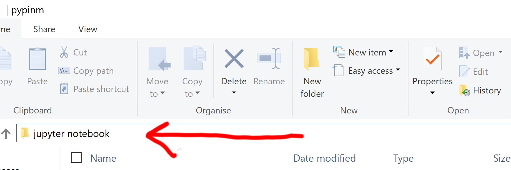
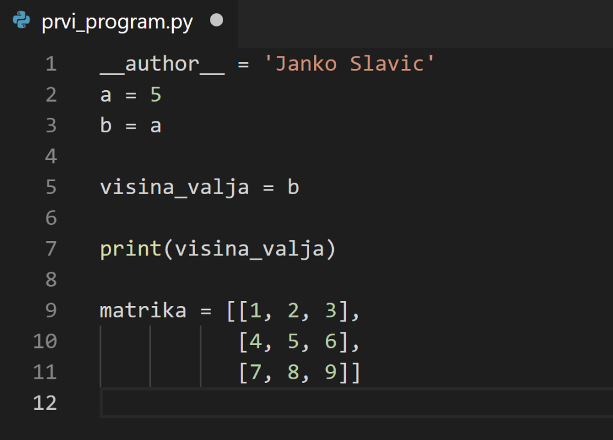

Uvod v Python
Contents
Uvod v Python#
Kaj je ekosistem Pythona?#
Marsikaterega bralca beseda ekosistem zmoti/zmede. Slovar slovenskega knjižnega jezika danes pozna samo rabo v povezavi z ekologijo. V računalništvu pa se v zadnjih desetletjih beseda ekosistem uporablja tudi v kontekstu t. i. digitalnega ekosistema; v primeru Pythona to pomeni vso množico različih paketov (samo pypi.org trenutno hrani več kot 330 tisoč različnih paketov), ki temeljijo na programskem jeziku Python in so med seboj povezani.
Ekosistem Pythona je veliko več kot pa samo programski jezik Python! Ta knjiga se v okviru prvih štirih predavanj osredotoča na tisti del tega ekosistema, ki je zanimiv in koristen predvsem za inženirske poklice.
Python je visokonivojski programski jezik, z visokim nivojim abstrakcije. Nizkonivojski programski jeziki, v nasprotju, imajo nizek nivo abstrakcije (npr. strojna koda).
Poglemo si izračun Fibonaccijevega števila, ki sledi definiciji: $\(F_1 = F_2 = 1\qquad\textrm{in}\qquad F_n = F_{n-1} + F_{n-2}.\)$
Izračun \(F_n\) v strojni kodi: 
MASM koda 
C
int Fibonacci(int n)
{
if ( n == 0 )
return 0;
else if ( n == 1 )
return 1;
else
return ( Fibonacci(n-1) + Fibonacci(n-2) );
}
Python
def fib(n):
if n == 0:
return 0
elif n == 1:
return 1
else:
return fib(n-1) + fib(n-2)
števila = [1, 2, 3, 4, 5] # seznam števil
[število*2 for število in števila if število>3]
[8, 10]
Python omogoča visok nivo abstrakcije in zato abstraktno kodo. Sedaj si bomo pogledali primer kode Python:
števila = [1, 2, 3, 4, 5] # seznam števil
[število for število in števila if število%2]
Čeprav v tem trenutku še nimamo dovolj znanja, poskusimo razumeti/prebrati:
prva vrstica definira seznam števil; vse kar sledi znaku # pa predstavlja komentar
rezultat druge vrstice je seznam, kar definirata oglata oklepaja; znotraj oklepaja beremo:
vrni
številoza vsako (for)številov (in) seznamuštevila, če (if) je pri deljenjušteviloz 2 ostanek 1.
Vidimo, da je nivo abstrakcije res visok, saj smo potrebovali veliko besed, da smo pojasnili vsebino!
Poglejmo rezultat:
števila = [1, 2, 3, 4, 5] # seznam števil
[število for število in števila if število%2]
[1, 3, 5]
Kratek pregled začetkov nekaterih programskih jezikov:
1957 Fortran, * 1970 Pascal, * 1972 C
1980 C++, * 1984 Matlab, * 1986 Objective-C
1991 Python, * 1995 Java, * 1995 Delphi
2009 Go, 2012 Julija
Kdo se uči Python, zakaj ga uporabljati?#
ZDA
Python je jezik, ki se ga najpogosteje učijo na najboljših Ameriških univerzah.

Na univerzi Berkeley v začetku študijskega leta 2017/18 (več kot 1200 študentov pri predmetu Data science, ki temelji na tehnologiji Jupyter notebook).
%%html
<blockquote class="twitter-tweet" data-lang="en"><p lang="en" dir="ltr">First day of class in Foundations of <a href="https://twitter.com/hashtag/Datascience?src=hash">#Datascience</a> for <a href="https://twitter.com/BerkeleyDataSci">@BerkeleyDataSci</a> - all materials at <a href="https://t.co/yyoJbaKlnL">https://t.co/yyoJbaKlnL</a> <a href="https://t.co/J6DLd0VQTl">pic.twitter.com/J6DLd0VQTl</a></p>— Cathryn Carson (@CathrynCarson) <a href="https://twitter.com/CathrynCarson/status/900408152348270592">August 23, 2017</a></blockquote>
<script async src="//platform.twitter.com/widgets.js" charset="utf-8"></script>
First day of class in Foundations of #Datascience for @BerkeleyDataSci - all materials at https://t.co/yyoJbaKlnL pic.twitter.com/J6DLd0VQTl
— Cathryn Carson (@CathrynCarson) August 23, 2017
Python v zadnjih 10 letih pospešeno pridobiva na popularnosti in je danes eden od najboljših (IEEE Spectrum.) in tudi najpopularnejših programskih jezikov (Why is Python Growing so Quickly? in Python’s explosive growth).
Slovenija
FRI: Programiranje 1
FMF: Naloge na www.projekt-tomo.si, poiščite: Prvi koraki v Python, Drugi koraki v Python, Python za začetnike
FS
Uporaba Pythona?#
Nekatera mednarodna podjetja: Nasa, Google, Cern.
Nekatera podjetja v Sloveniji: Kolektor, Iskra Mehanizmi, Hidria, Mahle, Domel, ebm-papst Slovenia, Cimos, Eti.
Nekateri programi, ki imajo vgrajeno skriptno podporo za Python: Abaqus, Ansys Workbench, MSC (Adams, SimXpert), ParaView, LMS Siemens, AVL.
Nekateri komercialni programi v Pythonu: BitTorrent, Dropbox.
Obširni seznam je tukaj.
Python vs Matlab#
Ker ni bilo boljše možnosti, je bil v preteklosti na področju strojništva bolj popularen Matlab; Matlab je še vedno močno orodje, vendar je danes ekosistem Pythona za večino opravil bistveno močnejše orodje. Na spletu boste našli ogromno primerjav, npr.: Python vs Matlab.
Kratka primerjave glede na vir:
Sintaksa je načeloma zelo podobna. Pomembna razlika je, da se indeksi pri Matlabu začnejo z 1, v Pythonu pa z 0.
Če ste mlajši od 25-30 let, preostanek te celice verjetno lahko preskočite.
Če niste, ste se verjetno učili Matlab in se sprašujete zakaj je v vašem klubu čedalje manj članov. Verjetno je čas za prehod na Python; tukaj prispevek, ki vam lahko pomaga: MATLAB vs Python: Why and How to Make the Switch.
Namestitev Pythona#
Pojdite na www.anaconda.com ter namestite Anaconda distribucijo Pythona; pazite, da izberete verzijo 3.8 ali novejšo (64 bit).
Pripravili smo video navodila, ključni poudarki so:
namestitev distribucije Anaconda,
obkljujkajte, da bo Visual Studio Code (pojasnjen spodaj) naložen preko anaconde (1m 48s),
posodobite distribucije na zadnje verzije prek ukazne vrstice (2m 28s),
namestitev Git klienta (pojasnjen spodaj, 4m 30s),
ureditev repozitorija v Visual Studio Code (5m 50s).
Uporaba githuba repozitorija in posodobitve#
Ta knjiga se vedno dopolnjuje, zadnja verzija je dosegljiva na:
v izvorni obliki na naslovu github.com/jankoslavic/pypinm,
v spletni obliki na naslovu jankoslavic.github.io/pypinm.io.
v pdf obliki na naslovu github.com/jankoslavic/pypinm.
Najbolje je za sinhronizacijo s spletnim repozitorijem uporabljati kakšnega od Git klientov. Git je sicer zelo močno orodje in skupini razvojnikov omogoča relativno enostavno delo na isti kodi in kontrolo nad različnimi verzijami datotek.
Visual Studio Code#
Pri tem predmetu bomo v glavnem programirali v Jupyter Notebooku, kateri nam omogoča zelo učinkovito programiranje ob uporabi polno formatiranega besedila in interaktivnih prikazov. Kadar želimo programirati obsežnejše in bolj splošno uporabne pakete ter namenske programe, pa se ponavadi poslužimo posebnih razvojnih okolij (angl. integrated development environment - IDE). Med bolj popularnimi sta pyCharm (glejte Community Edition) in Visual Studio Code - VSC. V zadnjem obdobju VSC, zaradi hitrosti, enostavnosti uporabe in razširljivosti, pridobiva na priljubljenosti in je že vključen v distribucijo Pythona Anaconda. Proti koncu tega predmeta se bomo vrnili k uporabi VSC, v tem trenutku navedimo zgolj povezavo do odličnega video posnetka na temo produktivnosti z VSC.
Nameščanje dodatkov in posodobitev#
Na pypi.org se nahaja veliko različnih paketov! Namestimo jih iz ukazne vrstice* (angl. command prompt) tako:
z ukazom pip,
bolj popularne pakete lahko namestim tudi z ukazom conda,
* Ukazno vrstico prikličete v operacijskem sistemu Windows 10 tako, da kliknite "Start" in napišite "command prompt" ter pritisnete "enter".
Podrobnosti nameščanja dodatkov si bomo pogledali naslednjič. Da boste imeli zadnjo verzijo paketov, izvedite naslednje:
Odprite ukazno vrstico in sprožite ukaz za posodobitev Anaconde:
conda update conda
nato posodobite še vse nameščene pakete:
conda update –all
Jupyter notebook (Jupyter lab)#
Jupyter notebook je interaktivno okolje, ki deluje kot spletna aplikacija in se lahko uporablja z različnimi programskimi jeziki (npr. Python, Julia, R, C, Fortran … iz prvih treh je nastalo tudi ime JuPyt[e]R).
Jupyter notebook je najlažje preizkusiti tukaj: try.jupyter.org ali colab.research.google.com.
Jupyter notebook zaženemo (v poljubni mapi) iz ukazne vrstice ali iz Raziskovalca/Explorerja z ukazom:
jupyter notebook.

Opombe:
s sprožitvijo
jupyter labpridemo do izboljšanega razvojnega okolja,tukaj predpostavimo, da je pot do datoteke jupyter[.exe] dodana v spremenljivke okolja; distribucija Anaconda s privzetimi nastavitvami to uredi pravilno, sicer iščite pomoč na spletu, npr. tukaj,
če želite ukazno vrstico sprožiti v poljubni mapi, potem v explorerju pridržite
shiftin kliknite mapo z desnim gumbom; nato izberite Odpri ukazno vrsticu tukaj / Open command window here.
Do Jupyter strežnika dostopamo prek spletnega brskalnika. Najprej se vam prikaže seznam map in datotek do katerih lahko dostopate v okviru mape, v kateri ste sprožili ukaz jupyter notebook. Nato poiščite v desnem kotu zgoraj ikono new in nato kliknite Python 3. S tem boste zagnali vaš prvi Jupyter notebook (v okviru jedra Python). Najdite ukazno vrstico in na desni strani kliknite na Help in nato User interface tour. Poglejte si še Help/Keyboard shortcuts.
Jupyter notebook je sestavjen iz t. i. celic (angl. cell).
Celica ima dve stanji:
Ukazno stanje / Command mode: v to stanje se vstopi s pritiskom [escape],
Stanje za urejanje / Edit mode v to stanje se vstopi s pritiskom [enter].
V obeh primerih se celico izvrši s pritiskom [shift + enter].
Celice so lahko različnega tipa; tukaj bomo uporabljali dva tipa:
Code: v tem primeru celica vsebuje programsko kodo (bližnjica v ukaznem stanju je tipka [y]),
Markdown: v tem primeru celica vsebuje besedilo oblikovano po standardu Markdown (bližnjica v ukaznem stanju je tipka [m]).
Markdown#
Jupyter notebook omogoča zapis v načinu markdown, ki ga je v letih 2003-2004 predstavil John Gruber. Namen markdowna je, da se pisec osredotoča na vsebino, pri tem pa za oblikovanje uporablja nekaj preprostih pravil. Pozneje se markdown lahko prevede v spletno obliko, v pdf (npr. prek LaTeX-a) itd. Bistvena pravila (vezana predvsem na uporabu na Githubu) so podana tukaj; spodaj jih bomo na kratko ponovili.
Naslove definiramo z znakom #:
# pomeni naslov prve stopnje,
## pomeni naslov druge stopnje itd*.
* Če pogledate kodo opazite, da se znak \ pojavi pred znakom # zato, da se prikaže sam znak # in ne uporabi njegovo funkcijo za naslov prve stopnje. Podobno je tudi pri drugih posebnih znakih.
Oblikovanje besedila definirajo posebni znaki; če želimo besedo (ali več besed) v poševni obliki, moramo tako besedilo vstaviti med dva znaka *: tekst v stanju za urejanje v obliki *primer* bi se prikazal kot primer.
Pregled simbolov, ki definirajo obliko:
poševno:*
krepko: **
~~prečrtano~~: ~~
simbol: `funkcije: ``blok kode: ```.
Opomba: za primer bloka kode Python glejte uvodno poglavje, primer Fibonacci.
V okviru markdowna lahko uporabljamo tudi LaTeX sintakso. LaTeX je zelo zmogljiv sistem za urejanje besedil; na Fakulteti za strojništvo, Univerze v Ljubljani, so predloge za diplomske naloge pripravljene v LaTeXu in Wordu. Tukaj bomo LaTeX uporabljali samo za pisanje matematičnih izrazov.
Poznamo dva načina:
vrstični način (angl. inline): se začne in konča z znakom \\(, primer: \)a^3=\sqrt{365}$,
blokovni način (angl. block mode): se začne in konča z znakoma \\(\\\), primer: $\(\sum F=m\,\ddot{x}\)$
Zgoraj smo že uporabljali sezname, ki jih začnemo z znakom * v novi vrstici:
lahko pišemo sezname
z več nivoji
3\(.\) nivo
2\(.\) nivo
lahko pišemo poševno
lahko pišemo krepko.
Če želimo oštevilčene sezname, začnemo z “1.” nato pa nadaljujemo z “1.”:
prvi element
drugi
naslednji …
V dokument lahko vključimo tudi html sintakso (angl. Hypertext Markup Language ali po slovensko jezik za označevanje nadbesedila). Kot html najenostavneje vključimo slike.
Uporabimo:
<img width=200 src="./fig/ladisk.png">
Za prikaz:
Vključimo lahko tudi zunanje vire (npr. video posnetek iz Youtube). Ker gre za morebitno varnostno tveganje, tega ne naredimo v celici tipa markdown kakor zgoraj, ampak v celici tipa code, pri tem pa uporabimo t. i. magični ukaz (angl. magic) %%html, ki definira, da bo celoten blok v obliki html sintakse (privzeto so celice tipa code Python koda):
%%html
<iframe width="560" height="315" src="https://www.youtube.com/embed/VLcPd07-gnk" frameborder="0" allowfullscreen></iframe>
Magičnih ukazov je v notebooku še veliko (glejte dokumentacijo) in nekatere bomo spoznali pozneje, ko jih bomo potrebovali!
Doslej smo že večkrat uporabili sklicevanje na zunanje vire, to naredimo tako:
[Ime povezave](naslov do vira)
Primer: [Spletna stran laboratorija Ladisk](www.ladisk.si) se oblikuje kot: Spletna stran laboratorija Ladisk.
V okviru markdowna lahko pripravimo preproste tabele. Priprava je relativno enostavna: med besede enostavno vstavimo navpične znake | tam, kjer naj bi bila navpična črta. Po naslovni vrstici sledi vrstica, ki definira poravnavo v tabeli.
Primer:
| Ime | Masa [kg] | Višina [cm] |
|:-|-:|:-:|
| Lakotnik | 180 | 140 |
| Trdonja | 30 | 70 |
| Zvitorepec | 40 | 100 |
Rezultira v:
Ime |
Masa [kg] |
Višina [cm] |
|---|---|---|
Lakotnik |
180 |
140 |
Trdonja |
30 |
70 |
Zvitorepec |
40 |
100 |
Opazimo, da dvopičje definira poravnavo teksta v stolpcu (levo :-, desno -: ali sredinsko :-:).
Prvi program in PEP#
Sedaj smo pripravljeni na prvi program napisan v Pythonu:
a = 5.0
print(a)
Program lahko zapišemo v poljubnem urejevalniku tekstovnih datotek (npr. Beležka/Notepad) in ga shranimo v datoteko ime.py.
Primer kode v okolju Visual Studio Code: 
To datoteko nato poženemo v ukazni vrstici (predpostavimo, da je pot do datoteke python.exe dodana v spremenljivke okolja; distribucija Anaconda s privzetimi nastavitvami to uredi pravilno, sicer glejte tale vir):
python ime.py
>>> 5.0
Z znaki >>> označimo rezultat, ki ga dobimo v ukazni vrstici.
Zgornji primer izvajanja Python programa predstavlja t. i. klasični način poganjanja programov od začetka do konca. Tukaj bomo bolj pogosto uporabljali t. i. interaktivni način, ko kodo izvajamo znotraj posamezne celice tipa code:
a = 5.0 # to je komentar
print(a) # izpiše vrednost a
5.0
PEP - Python Enhancements Proposal#
Python ima visoke standarde glede kakovosti in estetike. Že zgodaj v razvoju jezika se je uveljavil princip predlaganja izboljšav prek t. i. Python Enhancements Proposal (PEP na kratko).
PEP8#
Eden od bolj pomembnih je PEP8, ki definira stil:
zamik: 4 presledki,
en presledek pri operatorju
=, torej:a = 5in nea=5,spremenljivke in imena funkcij naj bodo opisne, pišemo jih s podčrtajem:
širina_valja = 5,za razrede uporabljamo t. i. format CamelCase.
pri aritmetičnih operaterjih postavimo presledke po občutku:
x = 3*a + 4*balix = 3 * a + 4 * b,za oklepajem in pred zaklepajem ni presledka, prav tako ni presledka pred oklepajem ob klicu funkcije:
x = sin(x), ne pax = sin( x )alix = sin (x),presledek za vejico:
range(5, 10)in nerange(5,10),brez presledkov na koncu vrstice ali v prazni vrstici,
znotraj funkcije lahko občasno dodamo po eno prazno vrstico,
med funkcije postavimo dve prazni vrstici,
vsak modul uvozimo (
import) v ločeni vrstici,najprej uvozimo standardne pythonove knjižnice, nato druge knjižnice (npr. numpy) in na koncu lastne.
Opomba: moderna razvojna orodja nam pomagajo pri oblikovanju kode, ki ustreza PEP8 (v VSC pritisnite ctrl+shift+P ter napišite “Format document” in pritisnite enter)!
PEP20#
PEP20 je naslednji pomemben PEP, ki se imenuje tudi The zen of Python, torej zen Pythona; to so vodila, ki se jih poskušamo držati pri programiranju. Tukaj navedimo samo nekatera vodila:
Lepo je bolje kot grdo.
Preprosto je bolje kot zakomplicirano.
Premočrtno je bolje kot gnezdeno.
Berljivost je pomembna.
Posebni primeri niso dovolj posebni, da bi prekršili pravilo
Če je implementacijo težko pojasniti, je verjetno slaba ideja; če jo je lahko, je mogoče dobra.
Osnove Pythona#
Osnovni podatkovni tipi in operatorji#
Dinamično tipiziranje#
Python je dinamično tipiziran jezik. Tipi spremenljivk se ne preverjajo. Posledično nekatere operacije niso mogoče na nekaterih tipih oz. so prilagojene tipu podatka (pozneje bomo na primer pogledali množenje niza črk). Tip se določi pri dodelitvi vrednosti, poglejmo primer:
a = 1 # to je komentar: a je celo število (integer)
a
1
Tip prikažemo z ukazom type:
type(a)
int
Vrednost a lahko prepišemo z novo vrednostjo:
a = 1.0 # to je sedaj število s plavajočo vejico (float)
a # če `a` tako zapišemo v zadnji vrstici, se bo izpisala vrednost
1.0
type(a)
float
Za izpis vrednosti sicer lahko uporabimo tudi funkcijo print(), ki jo bomo podrobneje spoznali pozneje:
print(a)
1.0
Dokumentacijo funkcije lahko kličemo s pritiskom [shift + tab]. Npr: napišemo pri in pritisnemo [shift + tab] ter se bo v pojavnem oknu prikazala pomoč; če pridržimo [shift], se z dodatnim pritiskom na [tab] prikaže razširjena pomoč, z nadaljnjim dvojnim pritiskom [tab] (skupaj torej 4-krat) se pomoč prikaže v novem oknu.
Do pomoči dostopamo tudi, tako, da pred funkcijo postavimo ? (za pomoč) ali ?? (prikaže tudi izvorno kodo, če je ta na voljo).
Primer:
?print
??print
Logični operatorji#
Logični operatorji so (vir):
or, primer:a or b; opomba: drugi element se preverja samo, če prvi ni res,and, primer:a and b; opomba: drugi element se preverja samo, če prvi je res,not, primer:not a; opomba: ne-logični operatorji imajo prednost:not a == bse interpretira kotnot (a == b).
Primerjalni operatorji#
Primerjalni operatorji (vir):
<manj kot,<=manj ali enako,>večje kot,>=večje ali enako,==enako,!=neenako,isistost objekta primerjanih operandov,is notali operanda nista isti objekt.
Primer:
5 < 6
True
Lahko naredimo niz logičnih operatorjev:
1 < 3 < 6 < 7
True
preverimo istost (ali gre za isti objekt):
a = 1
a == 1
True
Uporabimo še logični operator:
1 < 3 and 6 < 7
True
1 < 3 and not 6 < 7
False
Tukaj velja izpostaviti, da je v logičnih izrazih poleg False neresnična tudi vrednost 0, None, prazen seznam (ali niz, terka, …); vse ostalo je True.
Poglejmo nekaj primerov:
1 and True
True
0 and True
0
(1,) and True
True
Podatkovni tipi za numerične vrednosti#
Pogledali si bomo najbolj pogoste podatkovne tipe, ki jih bomo pozneje uporabili (vir):
intza zapis poljubno velikega celega števila,floatza zapis števil s plavajočo vejico,complexza zapis števil v kompleksni obliki.
Bolj podrobno bomo podatkovne tipe (natančnost zapisa in podobno) spoznali pri uvodu v numerične metode.
Primeri:
celo_število = -2**3000 # `**` predstavlja potenčni operator
racionalno_število = 3.141592
kompleksno_število = 1 + 3j # `3j` predstavlja imaginarni del
Operatorji numeričnih vrednosti#
Podatkovni tipi razvrščeni po naraščajoči prioriteti (vir):
x + yvsota,x - yrazlika,x * yprodukt,x / ydeljenje,x // yceloštevilsko deljenje (rezultat je celo število zaokroženo navzdol),x % yostanek pri celoštevilskem deljenju,-xnegiranje,+xnespremenjen,abs(x)absolutna vrednost,int(x)celo število tipaint,float(x)racionalno število tipafloat,complex(re, im)compleksno število tipacomplex,c.conjugate()kompleksno konjugirano število,divmod(x, y)vrne par(x // y, x % y),pow(x, y)vrnexna potencoy,x ** yvrnexna potencoy.
Pri aritmetičnih operatorjih velja izpostaviti različico, pri kateri se rezultat priredi operandu (vir). To imenujemo razširjena dodelitev (angl. *augmented assignement).
Poglejmo si primer. Namesto:
a = 1
a = a + 1 # prištejemo vrednost 1
a
2
lahko zapišemo:
a = 1
a += 1
a
2
Operatorji na nivoju bitov#
Operatorje na nivoju bitov bomo v inženirski praksi redko uporabljali, vseeno jih navedimo po naraščajoči prioriteti (vir):
x | yali na nivoju bitovxiny,x ^ yekskluzivni ali (samo en, ne oba) na nivoju bitovxiny,x & ybitni in na nivoju bitovxiny,x << npremik bitovxzanbitov levo,x >> npremik bitovxzanbitov desno,~xnegiranje bitovx.
Poglejmo si primer (vir):
a = 21 # 21 v bitni obliki: 0001 0101
b = 9 # 9 v bitni obliki: 0000 1001
c = a & b; # 0000 0001 v bitni obliki predstavlja število 1 v decimalni
c
1
Prikažimo število v bitni obliki:
bin(c)
'0b1'
Sestavljene podatkovne strukture#
Niz (string)#
Niz je sestavljen iz znakov po standardu Unicode. V podrobnosti se ne bomo spuščali; pomembno je navesti, da je Python od verzije 3 naprej naredil velik napredek (vir) in da lahko poljubne znake po standardu Unicode uporabimo tako v tekstu, kakor tudi v programskih datotekah .py.
Niz se začne in zaključi z dvojnim ” ali enojnim ‘ narekovajem.
b = 'tekst' # b je niz (string)
b
'tekst'
Pri tem ni težav z imeni, ki smo jih bolj vajeni:
π = 3.14
Znak \(\pi\) se v notebooku zapiše, da napišemo \pi (imena so ponavadi ista kot se uporabljajo pri zapisu v LaTeXu) in nato pritisnemo [tab].
Nekatere operacije nad nizi:
print('kratek ' + b) # seštevanje
print(3 * 'To je množenje niza. ') # množenje niza
print('Celo število:', int('5') + int('5')) # pretvorba niza '5' v celo število
print('Število s plavajočo vejico:', float('5') + float('5')) # pretvorba niza '5' v število s plavajo vejico
kratek tekst
To je množenje niza. To je množenje niza. To je množenje niza.
Celo število: 10
Število s plavajočo vejico: 10.0
Terka (tuple)#
Tuples (vir) ali po slovensko terke so seznami poljubnih objektov, ki jih ločimo z vejico in pišemo znotraj okroglih oklepajev:
terka_1 = (1, 'programiranje', 5.0)
terka_1
(1, 'programiranje', 5.0)
Večkrat smo že uporabili besedo objekt. Kaj je objekt? Objekte in razrede si bomo podrobneje pogledali pozneje; zaenkrat se zadovoljimo s tem, da je objekt več kot samo ime za določeno vrednost; objekt ima tudi metode.
Npr. drugi element je tipa str, ki ima tudi metodo replace za zamenjavo črk:
terka_1[1].replace('r', '8')
'p8og8ami8anje'
Če ima terka samo en objekt, potem jo moramo zaključiti z vejico (sicer se ne loči od objekta v oklepaju):
terka_2 = (1,)
type(terka_2)
tuple
Terke lahko zapišemo tudi brez okroglih oklepajev:
terka_3 = 1, 'brez oklepajev', 5.
terka_3
(1, 'brez oklepajev', 5.0)
Do objektov v terki dostopamo prek indeksa (se začnejo z 0):
terka_1[0]
1
Terke ni mogoče spreminjati (angl: immutable), elementov ne moremo odstranjevati ali dodajati. Klicanje spodnjega izraza bi vodilo v napako:
terka_1[0] = 3
>>> TypeError: 'tuple' object does not support item assignment
Seznam (list)#
Seznami (vir) se zapišejo podobno kot terke, vendar se uporabijo oglati oklepaji:
seznam = [1., 2, 'd']
seznam
[1.0, 2, 'd']
Za razliko od terk, se sezname lahko spreminja:
seznam[0] = 10
seznam
[10, 2, 'd']
Seznami so spremenljivi (angl. mutable) in treba se je zavedati, da ime v bistvu kaže na mesto v pomnilniku računalnika:
b = seznam
b
[10, 2, 'd']
Sedaj tudi b kaže na isto mesto v pomnilniku.
Poglejmo, kaj se zgodi s seznam, če spremenimo element seznama b:
b[0] = 9
b
[9, 2, 'd']
seznam
[9, 2, 'd']
Če želimo narediti kopijo podatkov, potem moramo narediti tako:
b = seznam.copy()
b[0] = 99
b
[99, 2, 'd']
seznam
[9, 2, 'd']
Primer seznama seznamov:
matrika = [[1, 2, 3],
[4, 5, 6],
[7, 8, 9]]
matrika
[[1, 2, 3], [4, 5, 6], [7, 8, 9]]
Več o matrikah bomo izvedeli pozneje.
Izbrane operacije nad seznami#
Tukaj si bomo pogledali nekatere najbolj pogoste operacije, za več, glejte dokumentacijo.
Najprej si poglejmo dodajanje elementa:
seznam = [0, 1, 'test']
seznam.append('dodajanje elementa')
seznam
[0, 1, 'test', 'dodajanje elementa']
Potem vstavljanje na določeno mesto (z indeksom 1, ostali elementi se zamaknejo):
seznam.insert(1,'na drugo mesto')
seznam
[0, 'na drugo mesto', 1, 'test', 'dodajanje elementa']
Potem lahko določeni element odstranimo. To naredimo s seznam.pop(i) ali del seznam[2]. Prvi način vrne odstranjeni element, drugi samo odstrani element:
odstranjeni_element = seznam.pop(2) # odstani element z indeksom 2 in ga vrne
# podoben učinek bi imel ukaz: del seznam[2]
print('seznam:', seznam)
print('odstranjeni element:', odstranjeni_element)
seznam: [0, 'na drugo mesto', 'test', 'dodajanje elementa']
odstranjeni element: 1
Z metodo .index(v) najdemo prvi element vrednosti v:
seznam
[0, 'na drugo mesto', 'test', 'dodajanje elementa']
seznam.index('test')
2
Zakaj uporabiti terko in ne seznama?#
Terk ne moremo spreminjati, zato je njihova numerična implementacija bistveno bolj lahka (v numeričnem smislu) in spomin se lahko bolje izrabi. Posledično so terke hitrejše od seznamov; poleg tega jih ne moretmo po nerodnosti spremeniti. Za širši odgovor glejte vir.
Množice (Sets)#
Množice so v principu podobne množicam kot jih poznamo iz matematike. Množice v Pythonu (dokumentacija) za razliko od ostalih sestavljenih struktur:
ne dovoljujejo podvojenih elementov in
nimajo urejenega vrstnega reda (pomembno, npr. za pravilno uporabo v zankah).
Vredno je poudariti, da sta dodajanje in ugotavljanje pripadnosti elementa množici zelo hitri operaciji.
Kreiramo jih z zavitimi oklepaji {} ali ukazom set():
A = {'a', 4, 'a', 2, 'ž', 3, 3}
A
{2, 3, 4, 'a', 'ž'}
Če se želimo v seznamu znebiti podvojenih elementov, je zelo enostaven način, da kreiramo množico iz seznama:
B = set([6, 4, 6, 6])
B
{4, 6}
Uporabimo lahko tipične matematične operacije nad množicami:
B - A # elementi v B brez elementov, ki so tudi v A
{6}
A | B # elementi v A ali B
{2, 3, 4, 6, 'a', 'ž'}
A & B # elementi v A in B
{4}
A ^ B # elementi v A ali B, vendar ne v obeh
{2, 3, 6, 'a', 'ž'}
Slovar (dictionary)#
Slovar (dokumentacija) lahko definiramo eksplicitno s pari ključ : vrednost, ločenimi z vejico znotraj zavitih oklepajev:
parametri = {'višina': 5.2, 'širina': 43, 'g': 9.81}
parametri
{'višina': 5.2, 'širina': 43, 'g': 9.81}
Do vrednosti (angl. value) elementa dostopamo tako, da uporabimo ključ (angl. key):
parametri['višina']
5.2
Pogosteje uporabljamo metode:
values(), ki vrne vrednosti slovarja,keys(), ki vrne ključe slovarja,items(), ki seznam terk (ključ, vrednost); to bomo pogosto rabili pri zankah.
Primer:
parametri.items()
dict_items([('višina', 5.2), ('širina', 43), ('g', 9.81)])
Slovarje lahko spreminjamo; npr. dodamo element:
parametri['lega_težišča'] = 99999
parametri
{'višina': 5.2, 'širina': 43, 'g': 9.81, 'lega_težišča': 99999}
Elemente odstranimo (podobno kot zgoraj pop odstrani in vrne vrednost del samo odstrani):
parametri.pop('lega_težišča')
99999
parametri
{'višina': 5.2, 'širina': 43, 'g': 9.81}
Operacije nad sestavljenimi podatkovnimi strukturami#
Večina sestavljenih podatkovnih struktur dovoljuje sledeče operacije (dokumentacija):
x in svrneTrue, če je kateri element izsenakx, sicer vrneFalse,x not in svrneFalse, če je kateri element izsenakx, sicer vrneTrue,s + tsestavisint,s * nalin * srezultira vn-krat ponovljens,s[i]vrnei-ti element izs,s[i:j]vrnesod elementai(vključno) doj(ni vključen),s[i:j:k]rezanjesod elementaidojpo korakuk,len(s)vrne dolžinos,min(s)vrne najmanjši element izs,max(s)vrne največji element izs,s.index(x[, i[, j]])vrne indeks prve pojavexvs(od indeksaidoj),s.count(x)vrne število elementov.
Nekateri primeri:
'a' in 'abc' # in primerja ali je objekt v nizu, seznamu,...
True
Zgoraj smo imeli seznam parametri:
{'g': 9.81, 'višina': 5.2, 'širina': 43}
Preverimo, ali vsebuje element s ključem širina:
'širina' in parametri
True
Štetje in rezanje sestavljenih podatkovnih struktur#
Predpostavimo spodnji niz:
abeceda = 'abcčdefghijklmnoprsštuvzž'
V Pythonu začnemo šteti indekse z 0! Na spletu lahko najdete razprave o tem ali je prav, da se indeksi začnejo z 0 ali 1. Zakaj začeti z 0 zelo lepo pojasni prof. dr. Janez Demšar v knjigi Python za programerje (vir, stran 28) ali pa tudi prof. dr. Edsger W. Dijkstra v zapisu na spletu.
Rezanje imenujemo operacijo, ko iz seznama izrežemo določene člene.
Splošno pravilo je:
s[i:j:k]
kar pomeni, da se seznam s razreže od elementa i do j po koraku k. Če katerega elementa ne podamo potem se uporabi (logična) vrednost:
ije privzeto 0, kar pomeni prvi element,jje privzeto -1, kar pomeni zadnji element,kje privzeto 1.
Prvi znak je torej:
abeceda[0]
'a'
Prvi trije znaki so:
abeceda[:3]
'abc'
Od prvih 15 znakov, vsak tretji je:
abeceda[:15:3]
'ačfil'
Zadnjih petnajst znakov, vsak tretji:
abeceda[-15::3]
'jmpšv'
Ko želimo obrniti vrstni red, lahko to naredimo tako (beremo od začetka do konca po koraku -1, kar pomeni od konca proti začetku s korakom 1:)):
abeceda[::-1]
'žzvutšsrponmlkjihgfedčcba'
Kontrola toka programa#
Pogledali si bomo nekatera osnovna orodja za kontrolo toka izvajanja programa (dokumentacija).
Stavek if#
Tipična oblika stavka if (dokumentacija):
if pogoj0:
print('Izpolnjen je bil pogoj0')
elif pogoj1:
print('Izpolnjen je bil pogoj1')
elif pogoj2:
print('Izpolnjen je bil pogoj2')
else:
print('Noben pogoj ni bil izpolnjen')
Primer:
a = 6
if a > 5:
print('a je več od 5') # se izvede, če je pogoj res.
print(13*'-')
a je več od 5
-------------
Zgoraj smo funkcijo print zamaknili, saj pripada bloku kode, ki se izvede v primeru a > 0. Nekateri programski jeziki kodo znotraj bloka dajo v zavite ali kakšne druge oklepaje in dodatno še zamikajo. Pri Pythonu se samo zamikajo. Zamik je tipično 4 presledke. Lahko je tudi tabulator (manj pogosto), vendar pa smemo v eni datoteki .py uporabljati le en način zamikanja.
Stavke lahko zapišemo tudi v eno vrstico, vendar je taka uporaba odsvetovana, saj zmanjšuje preglednost kode:
if a > 5: print('taka oblika je odsvetovana'); print(40*'-'); print('uporaba podpičja namesto nove vrstice')
taka oblika je odsvetovana
----------------------------------------
uporaba podpičja namesto nove vrstice
Izraz if#
Poleg stavka if ima Python tudi izraz if (angl. ternary operator, glejte dokumentacijo).
Sintaksa je:
[izvedi, če je True] if pogoj else [izvedi, če je False]
Preprost primer:
'Je res' if 5==3 else 'Ni res'
'Ni res'
If izrazi so zelo uporabni in jih bomo pogosto uporabljali pri izpeljevanju seznamov!
Zanka while#
Sintaksa zanke while (dokumentacija) je:
while pogoj:
[koda za izvajanje]
else:
[koda za izvajanje]
Pri tem je treba poudariti, da je del else opcijski in se izvede ob izhodu iz zanke while. Ukaz break prekine zanko in ne izvede else dela. Ukaz continue prekine izvajanje trenutne kode in gre takoj na testiranje pogoja.
Preprost primer:
a = 0
while a < 3:
print(a)
a += 1
else:
print('--')
0
1
2
--
Zanka for#
V Pythonu bomo zelo pogosto uporabljali zanko for (dokumentacija). Sintaksa je:
for element in seznam_z_elementi:
[koda za izvajanje]
else:
[koda za izvajanje]
Podobno kakor pri while je tudi tukaj else del opcijski.
Poglejmo primer:
imena = ['Jaka', 'Miki', 'Luka', 'Anja']
for ime in imena: # tukaj se skriva prirejanje; ``ime`` vsakič pridobi novo vrednost
print(ime)
Jaka
Miki
Luka
Anja
Zelo uporabno je zanke delati čez slovarje:
print('Slovar je:', parametri)
for key, val in parametri.items():
print(key, '=', val)
Slovar je: {'višina': 5.2, 'širina': 43, 'g': 9.81}
višina = 5.2
širina = 43
g = 9.81
Izpeljevanje seznamov#
Pri programiranju se pogosto srečujemo s tem, da moramo izvajati operacije na posameznem elementu seznama. Predhodno smo že spoznali zanko for, ki jo lahko uporabimo v takem primeru.
Oglejmo si primer, kjer izračunamo kvadrat števil:
seznam = [1, 2, 3] # izvorni seznam
rezultat = [] # pripravimo prazen seznam v katerega bomo dodajali rezultate
for element in seznam:
rezultat.append(element**2)
rezultat
[1, 4, 9]
Mnogo enostavneje lahko isti rezultat dosežemo s t. i. izpeljevanjem seznamov (angl. list comprehensions, glejte dokumentacijo).
Zgornji primer bi bil:
seznam = [1, 2, 3] # izvorni seznam
rezultat = [element**2 for element in seznam] # <<< na desni strani = je izpeljevanje seznamov
rezultat
[1, 4, 9]
Izpeljevanje seznamov predstavlja koda [element**2 for element in seznam], ki v bistvu pove to, kar je napisano: izračunaj kvadrat za vsak element v seznamu. Da je rezultat seznam, nakazujejo oglati oklepaji.
Izpeljevanje seznamov ima sledečo sintakso:
[koda for element in seznam]
in ima predvsem dve prednosti:
preglednost / kompaktnost kode in
malo hitrejše izvajanje.
Preglednost/kompaktnost smo lahko že presodili. Kako preverimo hitrost? Najlažje to naredimo s t. i. magičnim ukazom %%timeit, torej meri čas (glejte dokumentacijo); spodaj bomo uporabili blokovni magični ukaz (označuje ga %%):
%%timeit -n1000
kjer parameter -n1000 omejuje merjenje časa na 1000 ponovitev.
Najprej daljši način:
seznam = range(1000)
%%timeit -n1000
rezultat = []
for element in seznam:
rezultat.append(element**2)
204 µs ± 4.08 µs per loop (mean ± std. dev. of 7 runs, 1,000 loops each)
Nato izpeljevanje seznamov (bolj pregledno in malenkost hitreje):
%%timeit -n1000
rezultat = [element**2 for element in seznam]
191 µs ± 3.61 µs per loop (mean ± std. dev. of 7 runs, 1,000 loops each)
Poglejmo si še dva uporabna primera:
uporabo izraza
ifza izračun nove vrednosti,uporabo izraza
if, če se nova vrednost sploh izračuna.
Pri izračunu nove vrednosti izraz if vstavimo v del pred for:
seznam = [1, 2, 3]
[el+10 if el<2 else el**2 for el in seznam]
[11, 4, 9]
Pogosto pa za določene elemente izračuna sploh ne želimo izvesti, v tem primeru izraz if vstavimo za seznam:
[el**2 for el in seznam if el >1]
[4, 9]
Funkcija zip#
Ko želimo kombinirati več seznamov v zanki, si pomagamo s funkcijo zip (dokumentacija); primer:
x = [1, 2, 3]
y = [10, 20, 30]
for xi, yi in zip(x, y):
print('Pari so: ', xi, 'in', yi)
Pari so: 1 in 10
Pari so: 2 in 20
Pari so: 3 in 30
Funkcija range#
Pogosto bomo uporabljali zanko for v povezavi s funkcijo range (dokumentacija). Sintaksa je:
range(stop)
range(start, stop[, step])
Če torej funkcijo kličemo z enim parametrom, je to stop: do katere številke naštevamo. V primeru klica z dvema parametroma start, stop, naštevamo od, do! Tretji parameter je opcijski in definira korak step.
Poglejmo primer:
for i in range(3):
print(i)
0
1
2
Funkcija enumerate#
Zanko for pogosto uporabljamo tudi s funkcijo enumerate, ki elemente oštevilči (dokumentacija).
Poglejmo primer:
for i, ime in enumerate(imena):
print(i, ime)
0 Jaka
1 Miki
2 Luka
3 Anja
Za konec: plonk list :)#
Veliko jih je; tukaj je povezava do enega.
Nekaj vprašanj za razmislek!#
Namestite Anaconda.
Namestite Visual Studio Code, GIT in iz GitHuba ter prenesite predavanja.
V poljubnem delovnem direktoriju zaženite Jupyter notebook.
Prikažite uporabo stilov, uporabo poudarjenega, poševnega teksta, uporabo seznamov, enačbe …
Definirajte razliko med statičnim in dinamičnim tipiziranjem.
Poiščite pomoč poljubnega ukaza (znotraj Pythona in na uradni domači strani).
Prikažite uporabo niza, celega števila in števila z uporabo plavajoče vejice.
Prikažite uporabo terke in njenih bistvenih lastnosti.
Prikažite uporabo seznama in njegovih bistvenih lastnosti.
Komentirajte tipične operacije nad seznami.
Komentirajte uporabo množic in tipične uporabe.
Prikažite uporabo slovarjev.
Katere aritmetične operatorje poznamo v Pythonu? Prikažite uporabo.
Katere primerjalne operatorje poznamo v Pythonu? Prikažite uporabo.
Katere logične operatorje poznamo v Pythonu? Prikažite uporabo.
Prikažite uporabo stavka ``if`.
Kakšna je razlika med stavikom
ifin izrazomif. Prikažite!Prikažite uporabo zanke
while.Prikažite uporabo zanke
for.Prikažite uporabo zanke
forv povezavi s funkcijamirange,enumerate,zip
Še nekaj branja: automatetheboringstuff.com.
In en twit:
%%html
<blockquote class="twitter-tweet" data-lang="en"><p lang="en" dir="ltr">The most important slide from my <a href="https://twitter.com/PyData">@PyData</a> talk. <a href="https://t.co/Hc8j4ZpHV4">pic.twitter.com/Hc8j4ZpHV4</a></p>— Almar Klein (@almarklein) <a href="https://twitter.com/almarklein/status/708909917684568064">March 13, 2016</a></blockquote>
<script async src="//platform.twitter.com/widgets.js" charset="utf-8"></script>
The most important slide from my @PyData talk. pic.twitter.com/Hc8j4ZpHV4
— Almar Klein (@almarklein) March 13, 2016
Vključevanje lokalnega video posnetka s transformacijami#
from IPython.core.display import HTML
HTML('<style>video{\
-moz-transform:scale(0.75) rotate(-90deg);\
-webkit-transform:scale(0.75) rotate(-90deg);\
-o-transform:scale(0.75) rotate(-90deg);\
-ms-transform:scale(0.75) rotate(-90deg);\
transform:scale(0.75) rotate(-90deg);\
}</style>')
(Zgornje celice se na github-u ne prikaže pravilno)